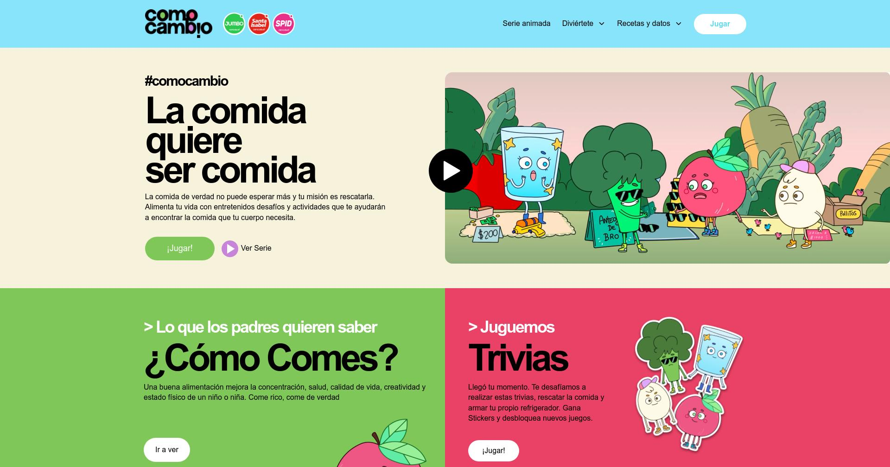
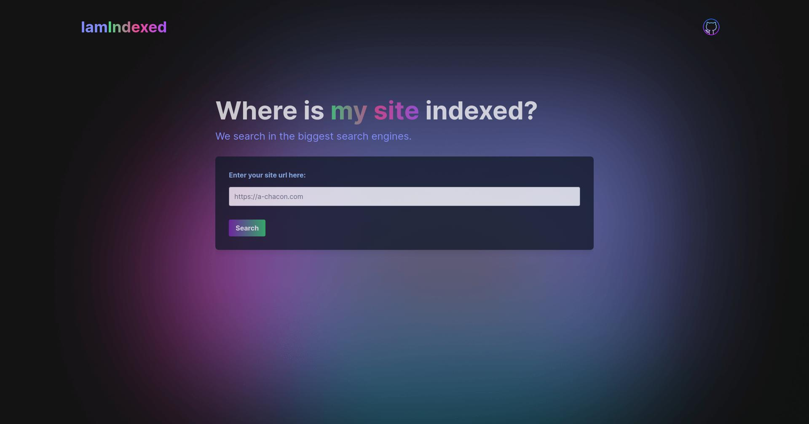
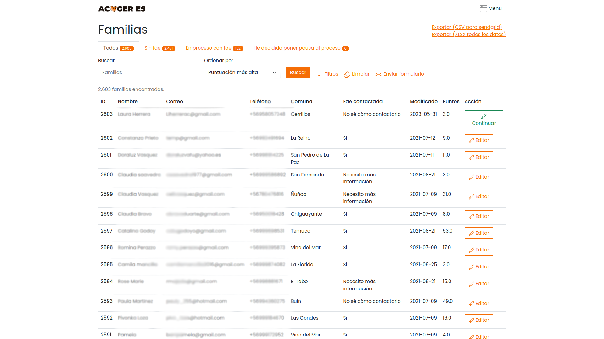
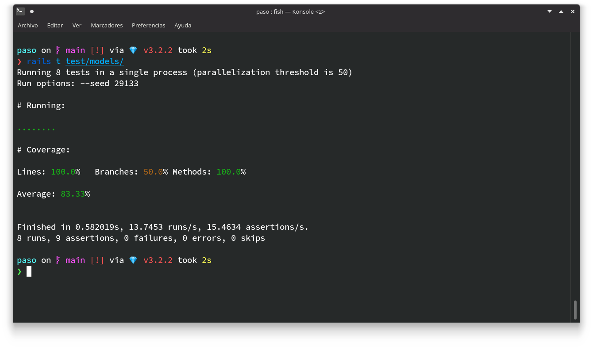

ComoCambio
ComoCambio es una plataforma parte de un programa de Cencosud para promover una cultura saludable. Comencé el proyecto hace dos años y participo activamente como desarrollador back-end y DevOps freelance para la empresa Zeeers.


Paso App
Un cortador de URL que además puede recolectar información sobre los visitantes. Este proyecto está hecho utilizando mi otro proyecto open-source RailsUrlShortener y solo tiene el propósito de mostrar su implementación.


Iamindexed
Una pequeña app que te ayuda haciendo Scraping en diferentes motores de búsqueda para saber si tu sitio está indexado o no. La idea nace de la necesidad de buscar de forma rápida si mis sitios estaban indexados o no.

AcogerEs
Un panel de administración para manejar datos sobre familias de acogidas para la Fundación AcogerEs. El proyecto contemplaba la depuración y carga de datos de más de dos mil familias junto a una campana de publicidad mediante correo.

Minitest-cc
Plug-in para el Framework de tests unitarios Minitest. Muestra información respecto a la cobertura que tienen los tests sobre el código del paquete o aplicación. Una opción mucho más simple a SimpleCov.

RailsUrlShortener
Motor para Rails que añade la funcionalidad completa para cortar URLs. Simplemente con instalar esta gema en alguna aplicación hecha con Rails puedes comenzar a cortar URLs y obtener información útil sobre su uso (ip, geolocalización, dispositivo, etc.).